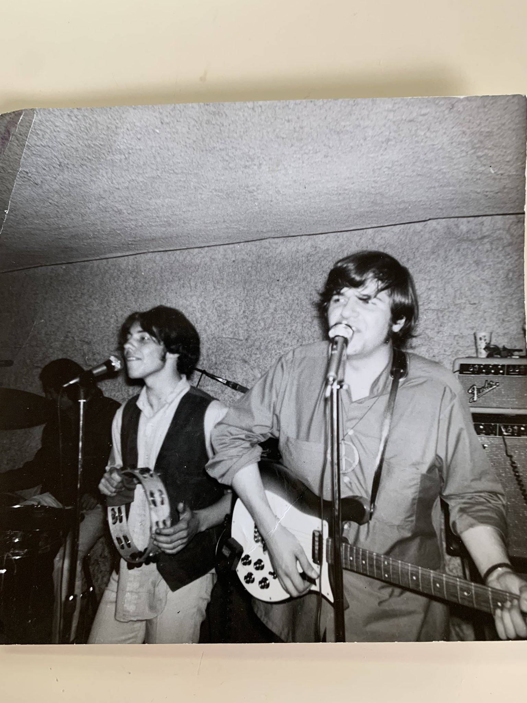
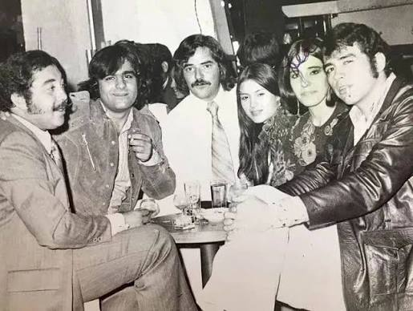

Años 60
Explora másLa década que revolucionó la música con el rock, el pop y las primeras grandes bandas de masas.

The Pop Music Team
Pop Music Team fue una de las bandas más controvertidas y fugaces del rock psicodélico mexicano. Su historia estuvo marcada por el éxito rápido, la censura y una disolución abrupta.
Facebook Spotify YouTube
Los Chijuas
Los Chijuas, una de las bandas pioneras más importantes del rock psicodélico y garaje mexicano de los años 60, ya no están activos como grupo, pero han vivido un importante resurgimien
Facebook Spotify YouTube